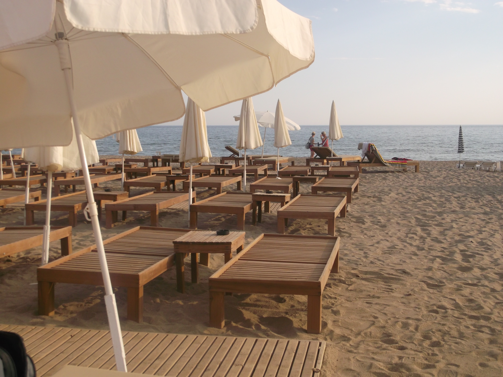

Photography
What is photography? Photography is the art or practice of taking and processing photographs.Photography is also my favourite part of my course.Here is some of my work that I have done throughout semester one and two.

I thought this photo really showed me the differential focus (shallow DOF). We can see that it is coming into winter in this picture from the Autumn leaves in the blurred background. What caught my eye was everything apart from this one living flower was dying from the coldness and the rain . I feel this picture also really captured the change of seasons from Summer to Autumn. Although the flower is slowly dying it still shows us how beautiful it is.

In this picture i think it best demonstrates leading lines.In the photograph the branches shaped in arch form leads your eye from the front of the shot to the back and creates a strong sense of depth. In this shot the parallel handrails made from wood highlights the verge of the path and the subject walking on the path highlights the direction in which the path is going.I think what works well here is all the branches and lines in this shot makes us focus on the subject and the direction in which he is going .

I took this photo when I was in Turkey it gave me a warm feel which I felt I had to capture.
I took this photo when I was in Hong Kong at fashion week what caught my eye to take this photo was the bright lights.